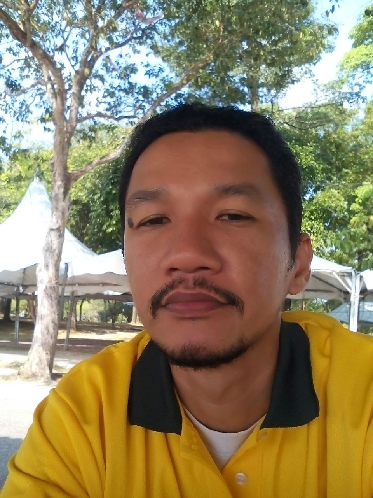
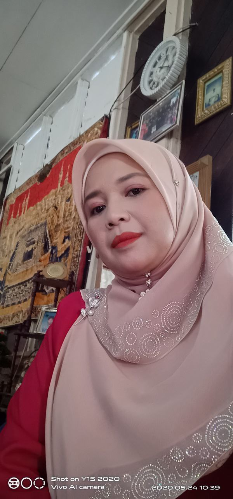
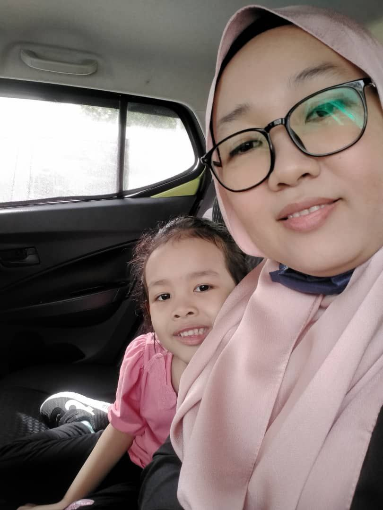
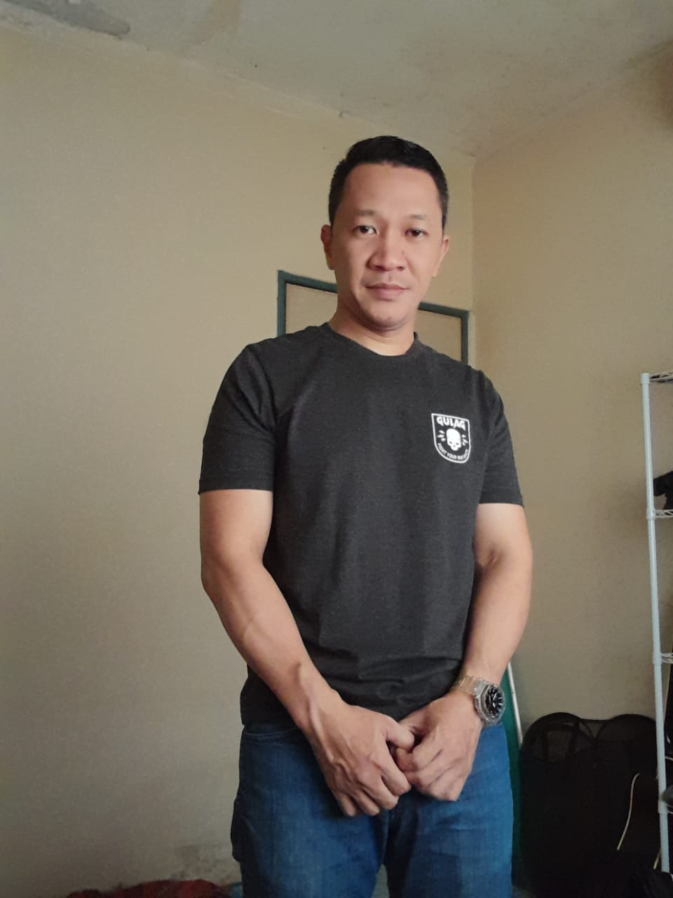

The picture above is a picture of my father and mother. On my left is a very loving father, Mr. Alias Bin Shariff, and on my right is a strict but very loving mother with her children, Mrs. Azizah Binti Hashim. My father is a very loving father who always encourages his children. Although his age has jumped to 70 this year, he is still strong to find a halal livelihood to support his children.
My mother is a full-time housewife and a nanny as one of the jobs to support some of my learning money while studying. They are both the most valuable possessions in my life. Let me show you my brothers and sisters, HEHEHEHE....

This is my eldest brother. His name is Asliady Faizal Bin Alias, he is 45 years old this year (be aware that he is almost 50 years old so it is a little difficult for him to show his smile HEHEHEHEHE) but he is a very loving brother to his younger siblings. Next to him is his wife and also my beautiful and kind sister-in-law, Maslinda Binti Kamsim, they got married when I was 2 years old and have been together until now and they are both blessed with 4 children.

The second is about my sister, Azlina Binti Alias. She was the eldest daughter before I came. She is a good and loving sister, maybe sometimes she is a bit fierce but her heart is very soft, as soft as an expensive sofa. My sister is a housewife and has been blessed with a daughter from her marriage. That's a bit of a story about my sister.

The last one is my second brother, Asliady Bin Alias or better known as Ady. His name and my eldest brother seem to be similar that's why we call him name ady to avoid confusion. My brother is still single and has no girlfriend yet if anyone wants to meet him please contact me immediately HAHAHAHA.( it's just a joke). He is very kind and generous, sometimes he will buy me food or buy me a present. He is a very protective brother to his younger sister who is me, every time he will ask how I am via call or chat. That is a bit of a story about my brother ady.